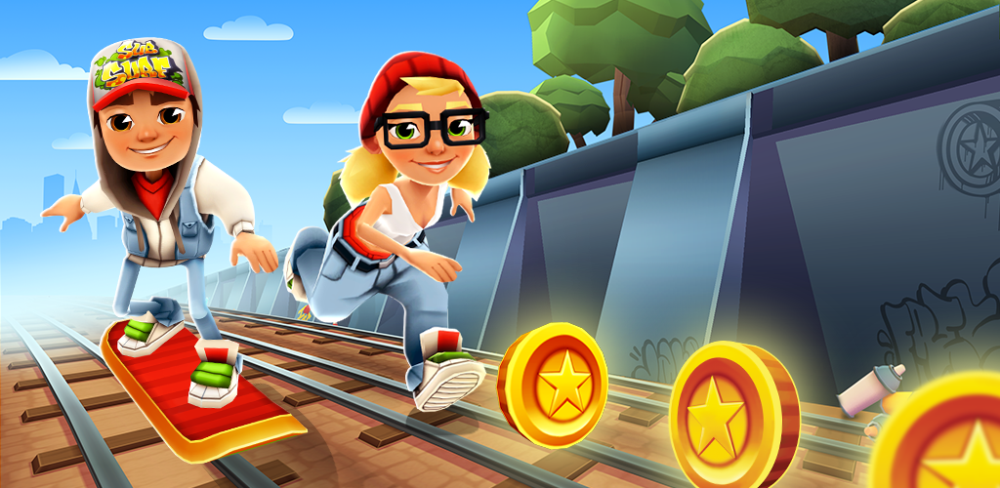

Home
Speedrun
Tutoriais
Sobre
Como utilizar o Cheat Engine Para desbloquear tudo no site
Link para o tutorial
Tutorial 2: Como configurar seu cronômetro
Link para o tutorial
Tutorial 3: Como jogar Subway Surfers usando o WASD no site
Link para o tutorial